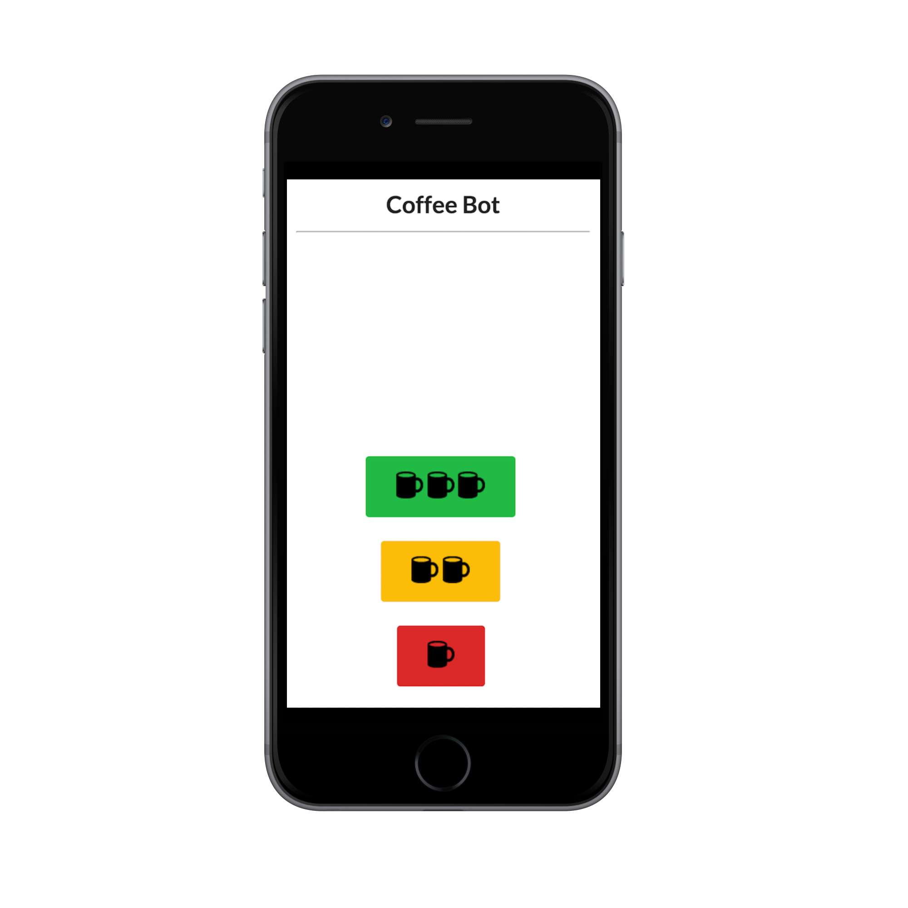

Coffee-bot
Code and information about Coffee Bot - a remote-control high-capacity coffee machine
This project is maintained by JohnAllen
Coffee Bot
Disclaimer
I am not a trained electrician or electrical engineer. Please be super careful and thoroughly understand the risks you are taking when working with electronics, especially 120 volts when working with wall-powered appliances. Kettles and other heating elements that can be left on when your Pi or code fails can obviously be very dangerous. I am not responsible for any mishaps or injuries. Never work with any electronics that are plugged in.
Background
For years I have wanted to automate the process of making coffee in the morning. I love drinking coffee but despise making it every morning. It's literally the worst time to have to do complete a bunch of processes just to get going. Especially when the process takes ten minutes and requires multiple steps to complete. The problem is similar to getting a car empty of gas to a gas station.
Most ways of making coffee require at least five steps:
- Get the coffee, grind it
- When it's good coffee, weigh it
- Get a filter or retrieve your French Press
- Heat and/or add water to the machine
- Turn on the coffee machine
- Wait four to five minutes
That sucks!
As part of my career transition from finance to technology, I started working with a Raspberry Pi after I getting one for Christmas to work on projects. Then I started dreaming of all the things I could make with it. Turns out you can make basically anything. Pis run Linux, which means you can run many apps and seemingly every computer on them. Awesome.
So after a week of owning a Raspberry Pi and pondering what I could do with it, the idea of making a coffee maker came back to mind. It was definitely the idea I was most passionate about. It was also something I would use every day. Something that would save me ten minutes every day. So it would pay off. Could I actually make a coffee machine? What would I have to accomplish? What parts do I need? How many different components would it need? What language would I write it in?
Design Goals
There were three main goals I was looking to achieve:
- Reduce the number of steps required to make coffee
- Eliminate the wait time of ~10 minutes
- Minimize the frequency of water and coffee refills
Parts
Below are the most salient parts if you want to build your own or something similar.
- The Raspberry Pi itself
-
A 2.5 gallon aquarium like this one These will hold approximately 28 300 gram servings of water.
- 1"8"8' wood
- A four channel relay
- Bunches of wires
- This burr coffee grinder
- Wire connectors for the appliances
- This is the cold water pump: from the aquarium to the kettle
- 14 gauge wire for the wall appliances
- Power supply for the 12V hot water pump
Other Parts You Probably Want to Own
- Alligator wires for testing circuits
- A multimeter also for testing circuits
- Breadboards
- Assorted screws
Code
- The Coffee Bot runs a Node.js-Express server. All it does is run a series of functions in a row: pump cold water for s seconds; heat that water for x seconds; grind coffee for z seconds; and finally pump the heated water into the French Press.
- It uses Async's handy series control flow. You simply create an array (or object) of functions that run in order, or in series.
- If you've never written code that changes physical space, I suggest you try it sometime. Even getting software to stop and start a motor was exhilirating for me.
- The [final function] in the code is an important one. It turns everything off.
Tips and Takeaways
- Say you're build something with two wall appliances. Get a separate multi-outlet extension that has only the wall appliances plugged into it. You'll be able to easily determine whether or not 120V is flowing through your application and unplug it while debugging and testing.
-
Relays
- The relays seems to be the most important part of this contraption. They are the switches that turn off and on the appliance. These relays are opto-isolators. They work like two lighthouses signalling one another. When one turns on its light, the other sees that and connects a circuit. The current the relays are rated for, 10 amps, is isolated from the much lower current Raspberry Pi with air, a poor conductor.
- The center terminal is the hot/positive/ terminal. Why are there two other terminals? One is normally open, or off. The other is normally closed. This is actually indicated on the relay. See the lines? On the left side, the line does not connect with the center terminal. On the right the line connects. This is your hint.

User Interface
Coffee Bot has a simple user interface, with just three buttons. The buttons are situated at the bottom to make pressing the buttons as easy as possible after just waking up.
